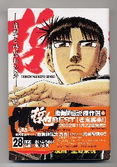

麻雀小説とか麻雀コミックとなると、主人公はたいていイカサマの達人。まぁホントに弱ったもんだ。
それはともかく、このイカサマも個人技とコンビ技の２種類に大別できる。個人技では、むかしから元禄だとか爆弾なんてのが有名。爆弾も２カ所、３カ所となるといくらなんでも難しいが、１カ所だけで済むドラ爆は簡単だし効果も大きい。
大学３年の時、アイウエオでゲームしてるとき、親番となった。壁牌を積み終わってサイコロを振ったら５が出た。そこで「よしっ、ドラ爆成功！」と軽口を言った。そいで配牌を始めたら、 ダブが暗刻....（あらぁ・・・）と思いながらドラ指示牌をめくると、なんと ダブが暗刻....（あらぁ・・・）と思いながらドラ指示牌をめくると、なんと 。(゜0゜) もう真っ青になった。 。(゜0゜) もう真っ青になった。
手そのものも３上聴くらいだったが、とてもじゃないがアガれたもんじゃない。心の中で（バカバカバカ）と百回くらい云いながら、ひたすら降りた....（号泣涕泣すすり泣き）。
しかし現実にはこんなに効果があっても、麻雀コミックとなると、こんな程度の積み込みではインパクトゼロ。やはり数カ所に仕込んだ爆弾の方が、話としてはインパクトがある。
この手でもっとも有名なのは麻雀放浪記、出目徳の大四喜爆弾。はじめて読んだときは、（やはり達人となると、ここまでやれるのか）と心から感心した。(-_-；
しかし今となっては、この程度の積み込みは陳腐となった。そこで奇想天外な積み込みが登場する。その中で印象に残っているのは、バードに登場する蛇。指先を切り落として磁石を埋め込むなんて、コミックの世界でしかあり得ない大技。
で、もう１種類のコンビ技。ようするに二人が組んで、いろいろな形でサインを出し合って打ち回すやつ。互いにサインを出し合うので、俗に通し（とお）し＝TO‾SI（^-^）とかローズと云う。
通しという表現はそのものズバリだから分かるが、ローズの方はどうしてそう言うのか寡聞にして知らない。このローズ、大別するとチクローズと指ローズに分かれる。
いうまでもなくチクローズの方は、密告する＝ちくるから来た表現。これももっとも有名なのは、麻雀放浪記の出目徳の２の２の天和。毎回言葉でサインを交わすチクローズとはちと異なるが、「明日は雨かなぁ」は一世を風靡した名セリフ。
もう一つの指ローズは、仲間同士が指でサインを交わし合うもの。軽く卓上においた右手の指の形で、仲間にテンパイを知らせたりする。
むかしあるところで（って、なんか聖人君子のイメージが崩れっぱなし....(_ _； あ、あ、あのころは、誰でもそんな芸当の一つや二つできるのが常識だったんだってば....）、「これは万子、これは筒子、これは....」と決めておいて麻雀をした。
ところがある局で、 と と の双ポン待ちとなった。数牌と字牌の双ポンまでは決めてなかったので、ハタと困った...仕方ないからリーチしてから、 の双ポン待ちとなった。数牌と字牌の双ポンまでは決めてなかったので、ハタと困った...仕方ないからリーチしてから、  とだけ通した。 とだけ通した。
ところがそのうち、上家がを切って追っかけリーチと来た。アガリじゃないから知らん顔していたが、対面の相棒が変な顔してこっちを見る。（おひ、そんな顔するなよ。バレちゃうじゃないか...）
そしたら、やがて追っかけリーチの上家がツモアガった。そこでσ(-_-)も「いやぁ、こんな待ちではやっぱりアガれなかったな」と云いながら、手を開けた。そしたら相棒が納得した顔でこっちを見た....（くどいようだけど、みい〜んな、生意気盛りの学生時代の話だかんね）。
で、ようやくこれからが本題。
そんなローズも、σ(-_-)のやったような指ローズでは麻雀コミックとしてはインパクトがない。そこでやはり奇想天外というか傑作な手口が登場する。そんな傑作手口が次から次へと出てくるのが、さいふうめい・原作、星野泰視・画の「哲也（講談社）」。

携帯電話を使ったり、雀荘の中をインコが飛び廻ったり、変わった手がいろいろ登場している。そんなかでも最大傑作と思うのが七色ローズ。
七色ローズというのは、指ローズの１種というか、もう腕ローズ。自分の欲しい牌を手話のように手を動かして相棒に伝える。
この七色ローズ、「 が欲しい」というとき、そのサインにプラスして不必要な動きを混ぜる。いうなら野球のブロックサイン。そのため余分にたくさん手を動かすので、「バババッ」ということになる。哲也の相棒であるダンチが「駄目だ、分からねぇ」と悲鳴をあげるが、手話じたい、普通の人間には分からねぇと思うぞ。（^-^； が欲しい」というとき、そのサインにプラスして不必要な動きを混ぜる。いうなら野球のブロックサイン。そのため余分にたくさん手を動かすので、「バババッ」ということになる。哲也の相棒であるダンチが「駄目だ、分からねぇ」と悲鳴をあげるが、手話じたい、普通の人間には分からねぇと思うぞ。（^-^；
でどうしてこの七色ローズが最大傑作と思うかと云うと、そもそもローズは、通しをやっていることが相手に分からないようにやるモノ。そこでこっそり携帯電話を使ったり、インコを利用したりする。
なのにローズしていること自体がバレバレの七色ローズでは、たとえ内容が相手に分からなくても意味がない。その意味がないローズを七色ローズと称してやっているのだから、これは間違いなくローズの最大傑作。（^-^）
そんな意味のないことに対して「駄目だ、分からねぇ」なんて言ってるダンチには、「駄目だ、おめぇは分かってねぇ」と小１時間は問い詰めたい。（笑）
|